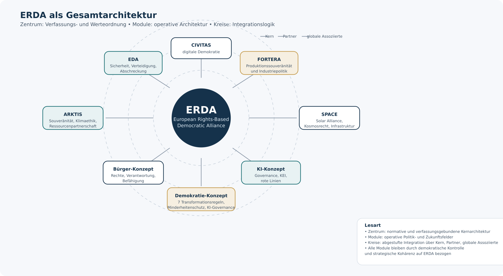
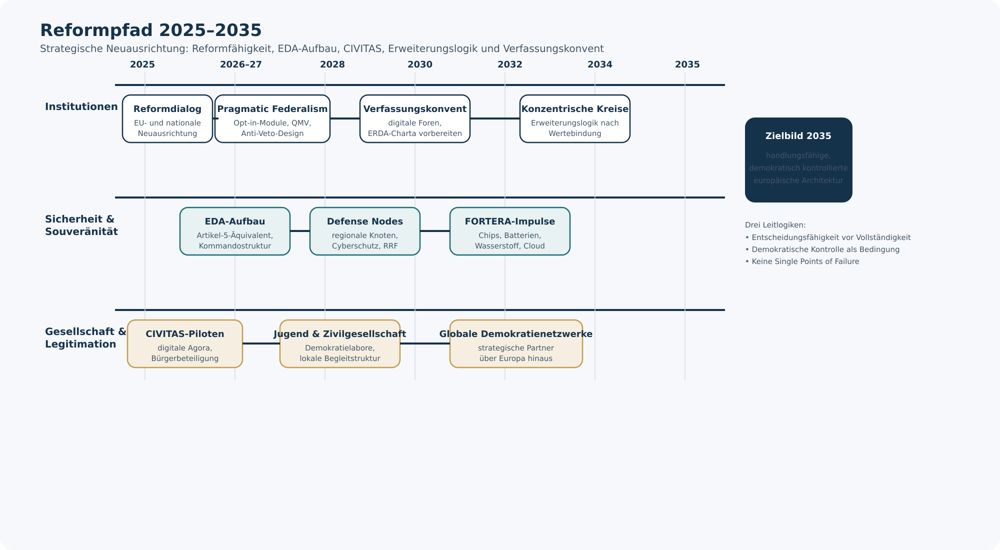
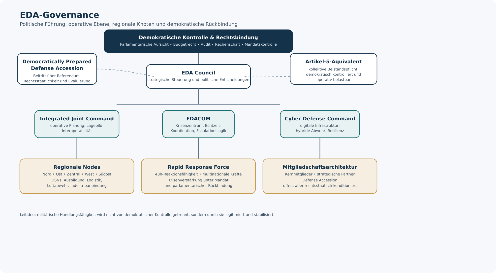
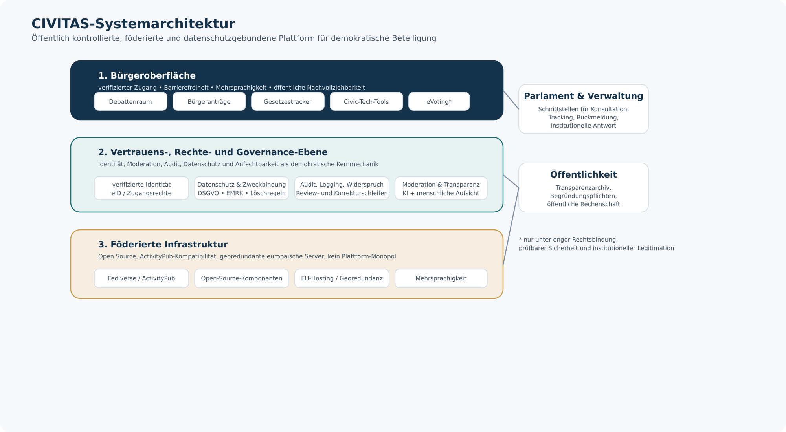
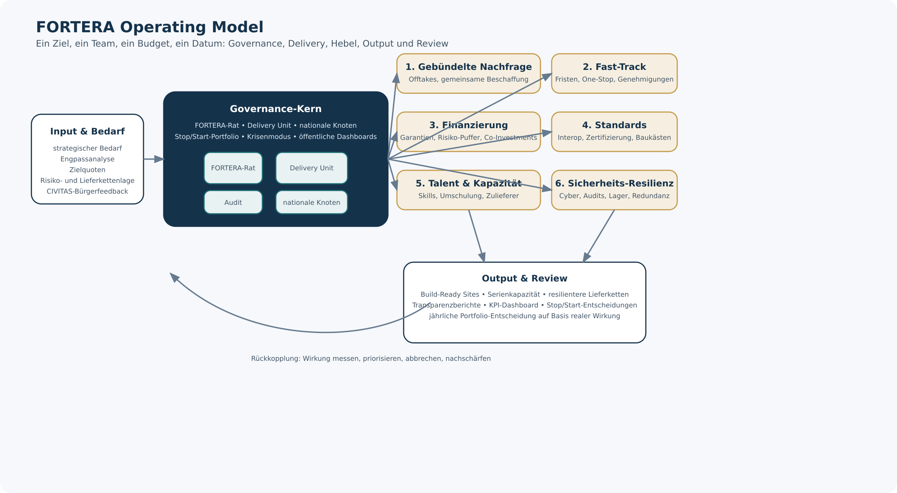
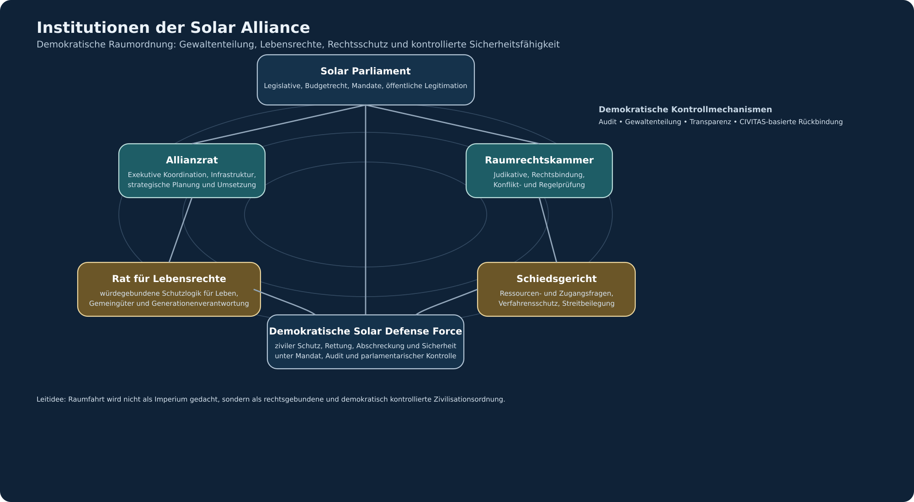
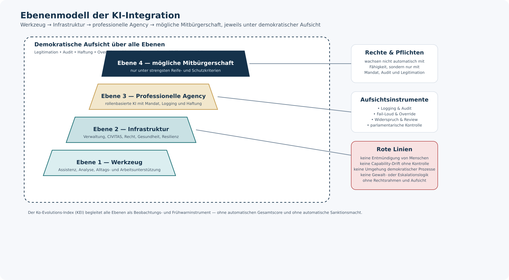
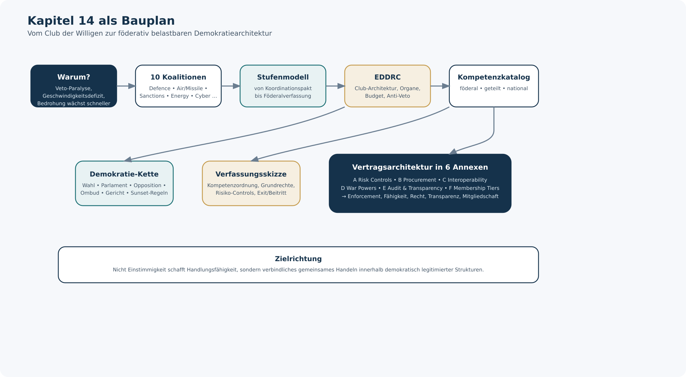

01 — ERDA als Gesamtarchitektur

02 — Reformpfad 2025–2035

03 — EDA-Governance

04 — CIVITAS-Systemarchitektur

05 — FORTERA Operating Model

06 — Institutionen der Solar Alliance

07 — Ebenenmodell der KI-Integration

08 — Kapitel 14 als Bauplan
